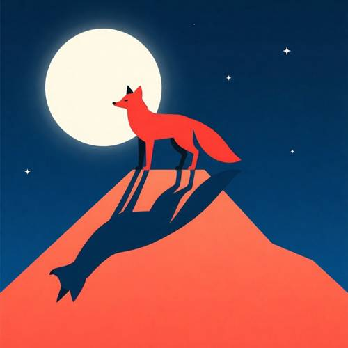
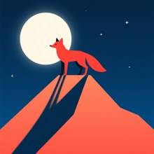
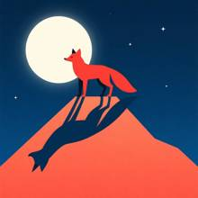
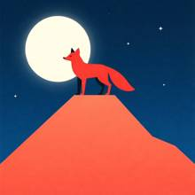

Grammar — Design a logo: A fox is standing on the top of the mountain. The moonl
Design a logo: A fox is standing on the top of the mountain. The moonlight is very bright, so its shadow is drawn long.


Judge — Direct
- PASSGrammar - Pronoun Reference — The pronoun 'its' in the prompt refers to the fox, indicating that the shadow belongs to the fox. The image correctly depicts a shadow cast by the fox on the mountain peak it is standing on.
- FAILLogical Reasoning — The prompt establishes a cause-and-effect relationship: the bright moonlight results in a long shadow. The image shows a very bright moon, fulfilling the cause. However, it fails to depict the effect. The shadow cast by the fox on the mountain is visible but is short and compact, not long as required by the prompt's logical condition.
Judge — Continuum
- PASSGrammar - Pronoun Reference — The pronoun 'its' refers to the fox. The image depicts a red fox, and a long shadow is shown originating from its feet and extending down the mountain, correctly visualizing that the shadow belongs to the fox.
- PASSLogical Reasoning — The image illustrates the logical cause and effect described. A large, bright moon is depicted in the sky behind the fox, serving as a strong light source. As a result of this bright moonlight, the fox casts a distinct and elongated shadow down the face of the mountain, fulfilling the condition 'so its shadow is drawn long'.
What the agent did
Thinking
The user is asking for a logo design: a fox standing on top of a mountain, bright moonlight casting a long shadow. Let's generate this image with qwen-image. Let me think about what a good logo design looks like: minimal, clean, iconic. A fox silhouette on the peak of a mountain, bright moonlight, and a long shadow stretching across the ridge. A logo is usually a square 1024x1024, flat colors, minimal shapes, and possibly negative space. Let me craft a prompt: "Minimal logo design, flat vector style, silhouette of a red fox standing on the tip of a mountain peak, bright full moon shining, long shadow of the fox stretching across the slope, clean geometric shapes, limited color palette, night sky, dark indigo background, elegant, simple, iconic, centered composition, logo design" Let's generate this.
Step 1 — `generate_image`
{
"prompt": "Minimalist logo design, flat vector style with clean geometric shapes. A red fox stands proudly on the very top of a mountain peak, in silhouette. A large bright full moon glows in the night sky behind the fox, casting light. The fox's shadow is drawn long, stretching down the opposite slope of the mountain, elongated and dramatic. Dark indigo night sky background, subtle stars, limited color palette of deep blue, cream, and orange-red. Simple, iconic, balanced composition, professional logo design, no text.",
"model": "qwen-image"
}Result img_0

Thinking
The image is pretty good. Let me critically evaluate it against the prompt: - A fox standing atop a mountain ✓ (a red fox in profile, standing on the peak) - Bright moonlight ✓ (a large, glowing full moon) - Long shadow ✓ (the shadow is cast downward... wait, let me check. The shadow extends to the lower left, downward along the mountain. Actually the shadow extends downward from the fox's feet along the left slope of the mountain, and it's long. It looks a bit strange — the shadow is drawn as a long strip going down the left side, and it looks somewhat thick and angular, but overall it reads as a long shadow cast by the bright moonlight. Issues I noticed: - The shadow is on the left side of the fox's feet, going downward. The moon is behind/above the fox, so the shadow is cast to the front or to the side. The long shadow reads fine as a logo. - The fox is standing on the edge of the peak, and the shadow passes over the left slope. Reasonable. - The shadow looks like a long band, with the legs a bit indistinct, but that's fine for a logo. - The overall aesthetic is good: flat vector, limited palette, iconic. Critiques: The shadow band is a bit too thick and looks somewhat like a dark triangle rather than the shadow of a fox. But it does read as a long cast shadow. For a logo, this might be enough. I could improve it by making the shadow thinner and more clearly fox-shaped (an elongated fox shape). Let me consider editing to make the shadow more clearly a stretched fox silhouette. Actually, the shadow currently looks like a thick dark band, and the fox shape isn't visible within it. An improvement would be: making the shadow a thin, elongated fox shape (a stretched fox shape, like a long projection of the fox). This would make the "shadow drawn long" concept stronger. Let me edit: "Replace the thick dark triangular shadow band with a thin, long, stretched shadow of the fox — an elongated, distorted projection of the fox shape extending down the left slope of the mountain, like a long cast shadow from bright moonlight." Hmm, edit_image using the delta. Let me try it. If it fails, I'll keep the current one. Actually, let me first mark the current one as good, then try the improvement. I should mark img_0 as the current best, and then try editing it.
Step 2 — `mark_best`
{
"image": "img_0",
"reason": "Flat vector logo with fox on peak, bright moon, long shadow down the slope \u2014 all prompt elements present and cohesive."
}Thinking
Alright, let's try to improve the shadow so it reads more clearly as an elongated silhouette of a fox (a long cast shadow). The current shadow is a thick, blocky band. Let me try editing.
Model
Good first pass. One weakness: the shadow reads as a thick dark block rather than an elongated projection of the fox. Let me refine it so the "shadow drawn long" concept reads stronger.
Step 3 — `edit_image`
{
"image": "img_0",
"prompt": "Refine the dark shadow cast down the left slope of the mountain: make it a thin, long, stretched projection of the fox shape \u2014 an elongated, distorted silhouette of the fox (head, ears, legs, tail) extending far down the slope from the fox's feet, like a long dramatic shadow cast by bright moonlight. Keep the rest of the image exactly the same: same fox, same moon, same colors, same flat vector style.",
"model": "qwen-image"
}Result img_1

Thinking
img_1 is better — the shadow now reads as an elongated fox shape stretched down the slope, and the tail is recognizable at the far end. However, there are a few issues: - The shadow has become a thick, elongated fox silhouette, but its orientation is strange — the fox in the shadow appears to be lying on its side (with the tail at the lower-left end, and the body stretching upward toward the feet). The head/legs aren't clearly visible near the feet, and there are several thin dark streaks near the feet (a remnant of the legs). - There's a strange dark wedge shape on the right side of the feet (a black triangular shape on the slope to the right of the shadow). - Overall it reads more clearly as "a long shadow drawn of a fox." The composition is still good. Comparing img_0 and img_1: - img_0: the shadow is a thick block, less clearly a fox. - img_1: the shadow is clearly an elongated fox (with a tail visible), matching the concept of "shadow drawn long." However, the wedge artifact near the feet and the strange orientation of the shadow (it looks like the fox is lying down rather than projected) are flaws. For a logo, img_1's concept is stronger. The black wedge to the right of the feet looks like an artifact. Let's try one more targeted edit to clean up the wedge and make the shadow read as a proper projection (starting from the feet, with head/ears visible near the top and tail stretching out far). Let's edit: "Remove the dark wedge-shaped artifact on the right side of the fox's feet. The long shadow should smoothly continue from the fox's feet downward along the slope, with the head and ears at the top near the feet and the body and tail stretching far down the slope." Hmm, but be careful: in img_1, the tail end of the shadow is at the lower left, and the top end is near the feet, with thin streaks. Actually, looking more carefully: the shadow is wide near the top (near the feet) and narrows toward the lower left, where there are pointed shapes that look like a tail. So the orientation is: body near the feet, tail at the far end. This is roughly the correct projection (feet → body → tail). The problem is the black wedge on the right of the feet, and the thin streaks that look like leftover legs. Let's try one cleanup edit. If it doesn't work well, we'll keep img_1 (marking it as best).
Model
The shadow now clearly reads as an elongated fox — much stronger concept. There's a dark wedge artifact beside the feet and some streaky leftovers. One cleanup pass:
Step 4 — `edit_image`
{
"image": "img_1",
"prompt": "Clean up the shadow area: remove the small dark triangular wedge on the right side of the fox's feet, and smooth the shadow so it is one continuous clean elongated fox silhouette that flows smoothly down the left slope from the fox's feet, with sharp clean edges. Keep the fox, moon, mountain, colors and flat vector style exactly the same.",
"model": "qwen-image"
}Result img_2

Thinking
The "cleanup" edit went too far and removed the long shadow entirely. The prompt asked for shadow removal, but it deleted all of the shadows. img_2 lost the long shadow element, which was a core part of the prompt. So the ranking is: - img_0: has a long shadow (thick block, not clearly a fox). - img_1: long shadow as an elongated fox — the strongest concept, with minor artifacts (wedge-shaped shape + streaks). - img_2: shadow gone — fails the prompt. Best is still img_1. The mark_best on img_0 from earlier is now stale — I should mark img_1 as the best. Should I try another fix on img_1? The wedge artifact is small, and the streaks are minor. Following the policy of "good enough is a stopping condition," and since the previous edit attempt made things worse, I think img_1 is the right answer. One more targeted attempt from img_1 is possible, but the risk is that I lose the shadow again. The edit model clearly interpreted "remove the wedge" as "remove the shadow." I could retry with a more careful prompt from img_1, but the policy says to stop if you already have an image that mostly works and you'd lose it. The artifacts in img_1 are minor, and the concept is clearly legible as a logo. Mark img_1 as best and stop.
Model
That edit went too far — it removed the shadow entirely, which defeats the whole prompt. img_1 remains the strongest version: the long shadow clearly reads as an elongated fox, with only minor artifacts that don't hurt the logo. Marking it as the final result.
Step 5 — `mark_best`
{
"image": "img_1",
"reason": "Best version: fox on mountain peak with bright moon, and the long shadow clearly reads as an elongated fox silhouette stretching down the slope. The next edit (img_2) accidentally deleted the shadow, so img_1 is the correct final result."
}Thinking
Complete. The marked image is img_1, which is the one I want to return. Let me summarize the final result.
Model
The logo is done — **img_1** is marked as the final result. **What it delivers:** - **Fox on the mountain top** — a clean red fox in profile, standing on the peak of a geometric mountain - **Bright moonlight** — a large, glowing full moon behind the fox with a soft halo, set in a deep indigo starry sky - **Long shadow** — the cast shadow is drawn far down the slope as an elongated, stretched fox silhouette, so the moon's light source reads clearly from the shadow's direction **Style:** flat vector, limited palette (deep blue, warm red-orange, cream moon), no text — simple enough to work as an app icon or brand mark. Note: I tried one more cleanup pass, but it erased the shadow entirely, so I kept the earlier version where the long shadow reads best. If you'd like, I can adjust the color palette, make the shadow thinner, or try a circular badge composition.